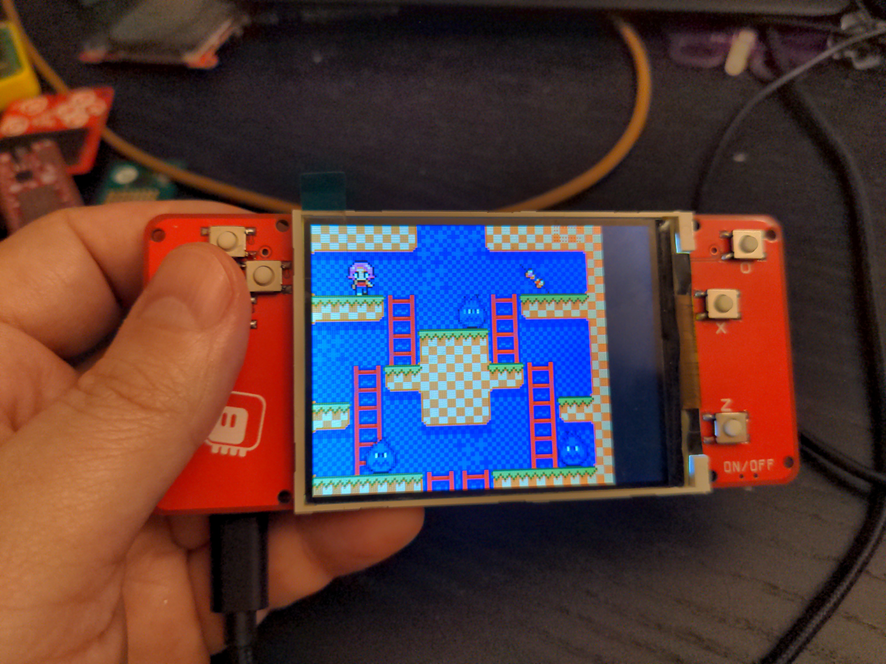

It’s Alive¶
Published on 2022-03-03 in µGame S3.
I had some time to add the remaining resistors to the build, and to compile a version of CircuitPython with my _stage module included. It all went without too much problems.
I quickly copied the screen initialization for displayio from Adafruit’s ILI9341 driver, and copied all the other bits for the ugame.py file from other platforms, and voila, we have a working game console:
What’s still left to do:
tweak the display registers to get rid of flickering
compile firmware with the display initialization included in C
get the pwm audio to work
think about a case, perhaps?
All in all, the large display is super-nice, and I’m also very happy with the light but clicky buttons. The position of the S2 Mini module is not great, but I can’t think of any better way to place it.